Sekar Kale, Anu, and Anvi reached home around 7 am from their place, Shegaon. They came by bus. They got down at Khadki, took an Uber, and reached home without any difficulty. After a bath, we all went to the Upsouth hotel and had our breakfast.
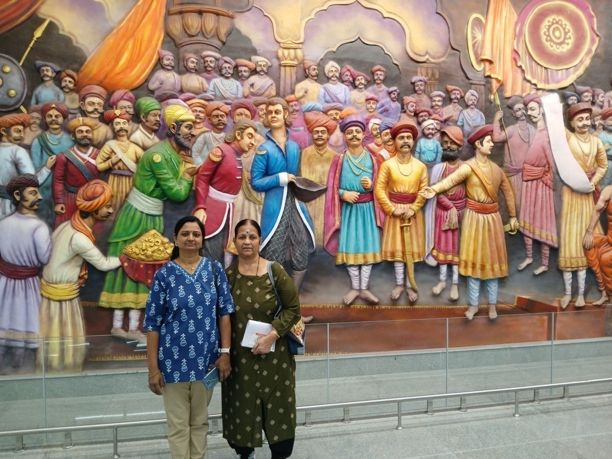
By 11:30, we all left for Pune airport in two cabs. Shashi booked our air tickets to Jaipur on Air India. We reached the airport around 12:30, and the new building of Pune Airport looks pretty good. On the first floor, paintings of Shivaji Maharaj attracted every passenger.
The flight was supposed to depart by 2:45, but it was late by half an hour. Travel time to Jaipur was about an hour and 30 minutes. We reached Jaipur around 5 pm. We collected our baggage, took a bigger cab, and all five proceeded to Leela Palace from the airport. The drive was an hour.
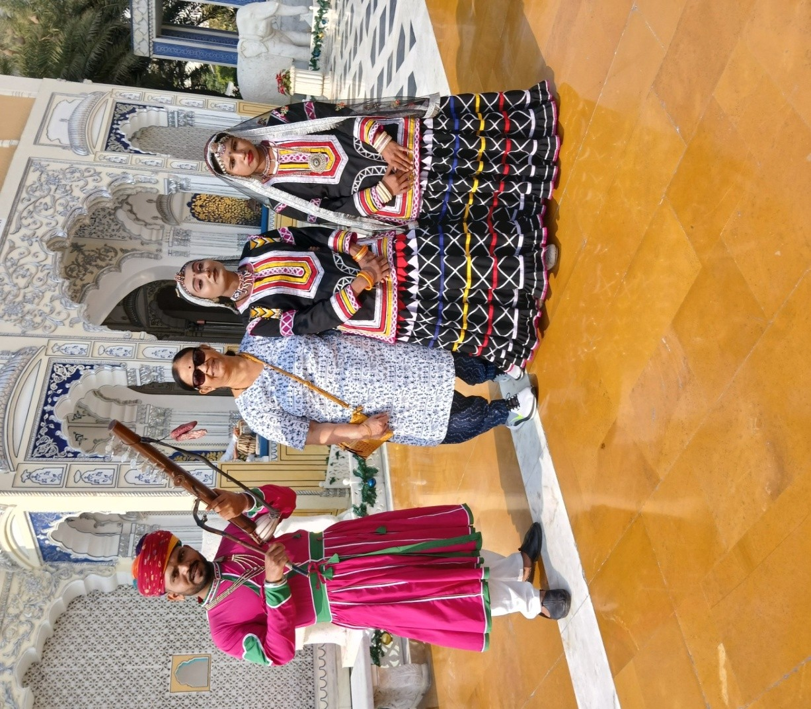
The welcome procedure in the hotel was overwhelming. While we entered the main gate, a group of people started playing drums and pipe. One girl in Rajasthani costume was dancing to the music tune. With that music party and dance performer, we reached the main entrance. There, another girl performed aarthi and put a thilak on our foreheads, and we reached the reception lobby. There, they served lemon tea.
Uma and Shashi booked four rooms in this Leela Palace. It is a 5-star hotel; the rooms are luxurious and more spacious with large glass windows. From the glass windows, we could see the swimming pool, garden, mountains, tombs of this palace, marble carvings, etc. After some rest, we had our dinner and took rest.
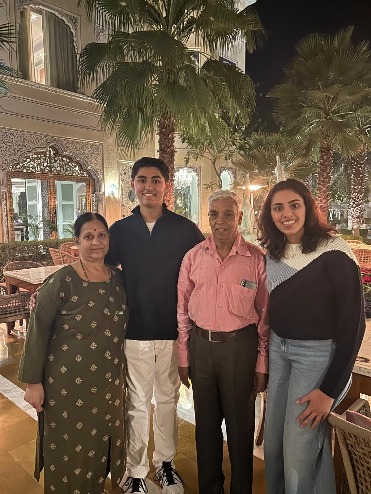
I got up around 5:30. I made coffee, and after coffee, I went down and found a nice place for a walk. For about 45 minutes, I walked around and returned to the room. After a bath, we all went to the dining hall. We found a variety of foodstuff there: South Indian dishes like idli, vada, dosa, pakkoda, pav bhaji, beetroot halva, etc.
After eating an elaborate breakfast, we had filter coffee. Then we left for sightseeing. Since we were 9 people, Shashi booked a van. First, we went to Jal Mahal.
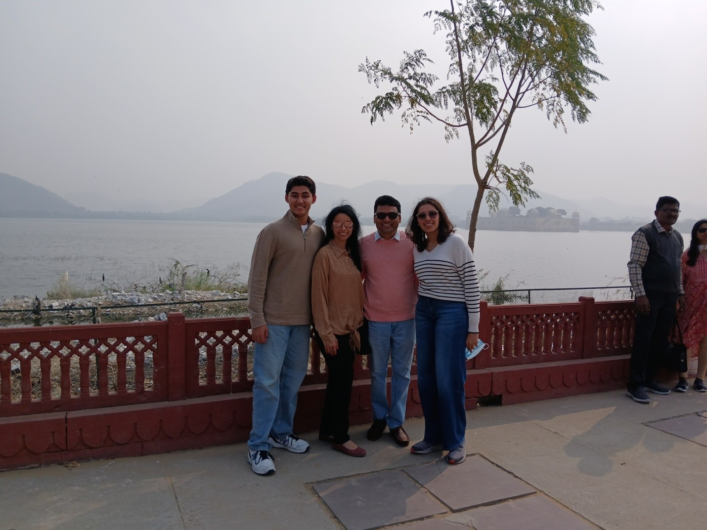
This Mahal is in the middle of a lake. Right now, we can only see the Mahal from the outside. From the guide, we understand that after the formation of the BJP government, it has been given for lease to a private party, and the Mahal is being renovated for commercial use.
Uma and Anuradha took photos in Rajasthan dress costumes. After this, we proceeded to the Jaipur Palace. We spent some two hours in this palace. We saw the gigantic silver vessel which was used by Maharaj Sawai Madho Singh to bring Ganges water. He used only Ganges water for bathing and drinking. Also, we saw Mubarak Mahal, the weapons museum, textile museum, etc.

Then we proceeded to Jantar Mantar. It is a UNESCO heritage site. Jantar Mantar features various astronomical devices built by Sawai Jai Singh in the 17th century.
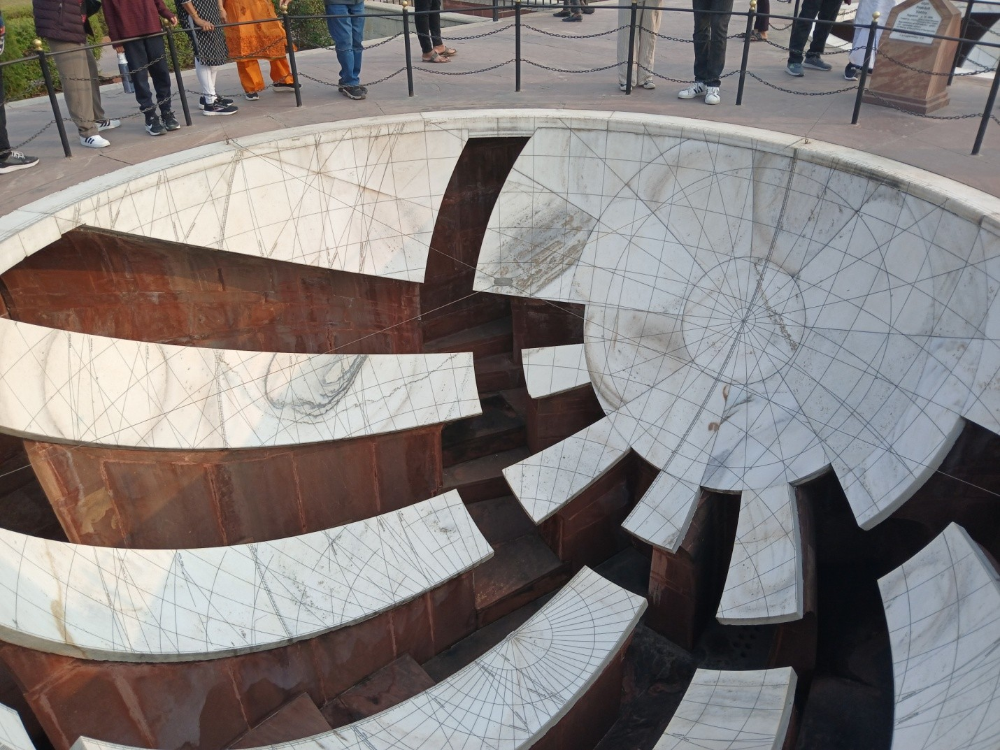
After that, we halted at the famous Ravat Kachori hotel. Here, we tasted onion and dal kachori. After that, we did some shopping, mainly purchasing dress materials.
Today also I got up before 6 am and, after coffee, I walked around the premises of this hotel. Leela Palace made a nice footpath around the hotel to walk around. Walking on this footpath is pleasurable. A beautiful garden, few fountains, and marble carvings are all there along this footpath. So it was enjoyable.

After the walk and bath, we all together went to the dining place of the hotel to have breakfast. From the buffet table, I picked up dosa, dal vada, puri, and subji. After that, I ate poha with kadi. The breakfast session ended with a filter coffee.
Around 11, we all left the hotel to visit Amer Fort. It is a prime tourist attraction in Jaipur. This fort is over a hill. To reach the fort from the bottom of the hill, we have to hire a jeep. Alternatively, we can travel via elephant.
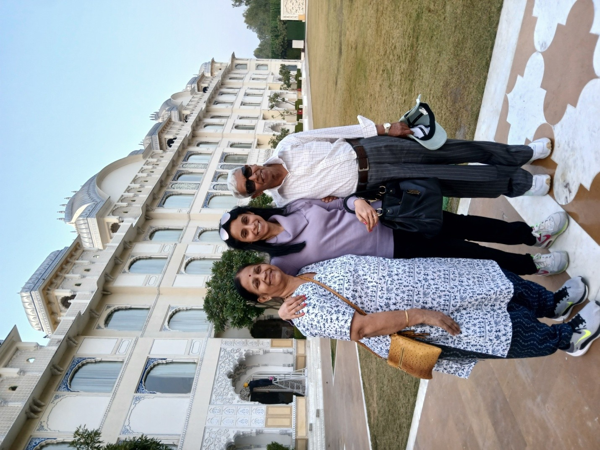
Near this fort, there is a village called Elephant Village. Here, more elephants are looked after by the villagers for their survival. They use these elephants for taking the tourists to the fort. Many tourists, especially tourists from other countries, enjoy this elephant ride.
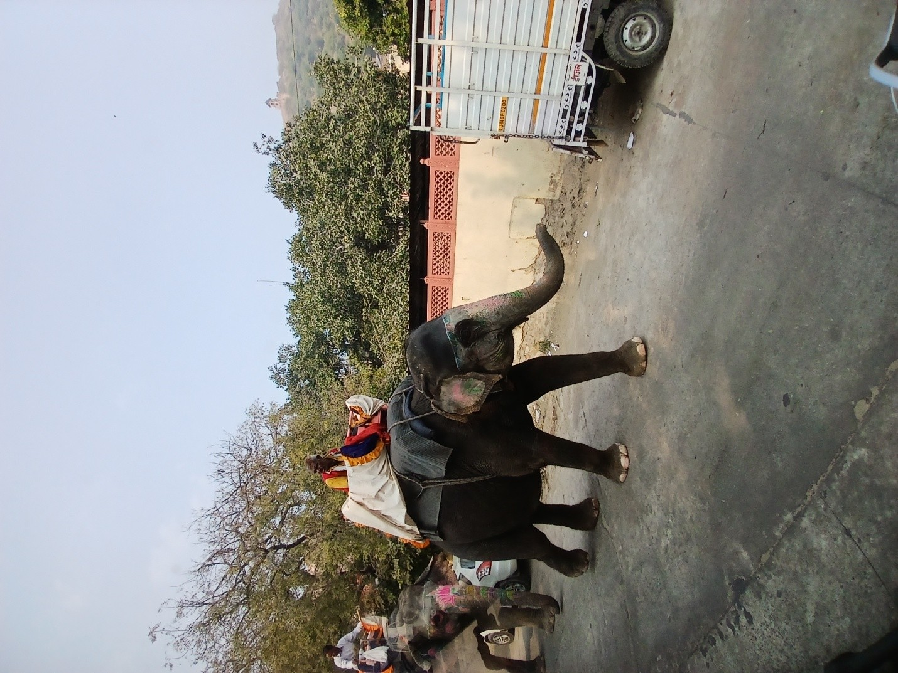
For elephants, a separate path is made to reach the fort. This elephant service is available only up to 11 am, as elephants do not prefer to walk in the hot weather. We reached the bottom of the hill by our usual van and from there we hired a jeep and a guide. Because of the large number of tourist vehicles, it took more than an hour to reach the palace. This palace was built by the King Man Singh in 1592.
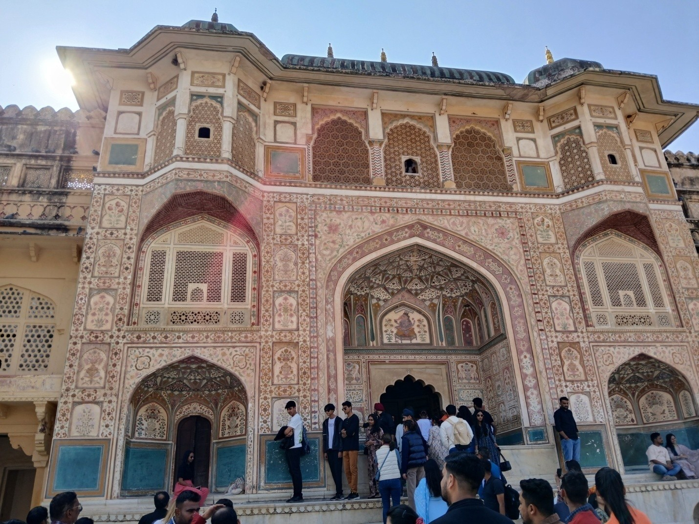
Still, some portion of this palace is occupied by the king’s dynasty people. At the entrance, there is a temple, and the deity is Sheela Devi. This palace is constructed using red stone and marble. The palace has four floors. The architecture of this palace is a combination of Mughal and Rajput styles. In this palace, the Hall for Public Audience, Sheesh Mahal, and Sukh Nivas are all located.
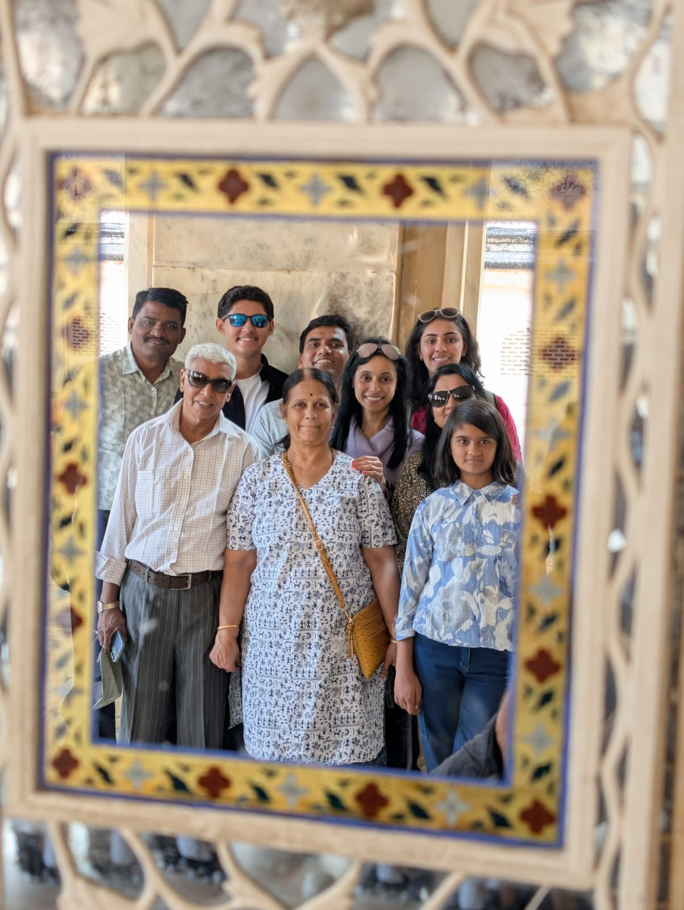
Sukh Nivas is the part of the palace where the queens stayed. To keep it cool, a water flow arrangement is seen in this room. Sheesh Mahal is the most attractive place of this palace. A large number of mirrors are embedded all over the roof and walls. All these mirrors were brought from Belgium during that time.
We spent about two hours in this palace and took a late lunch at a hotel called Rajwad. Then we returned to the hotel. From 6 pm to 7 pm in the hotel, there was a cultural program. We attended the program, and after that, we had our dinner and then went to our room to sleep.

The 22nd of December was almost a rest day. We got up leisurely and had our great breakfast without any hurry. Around 12, we left Leela Palace. In the van, we went and were dropped at Hawa Mahal.
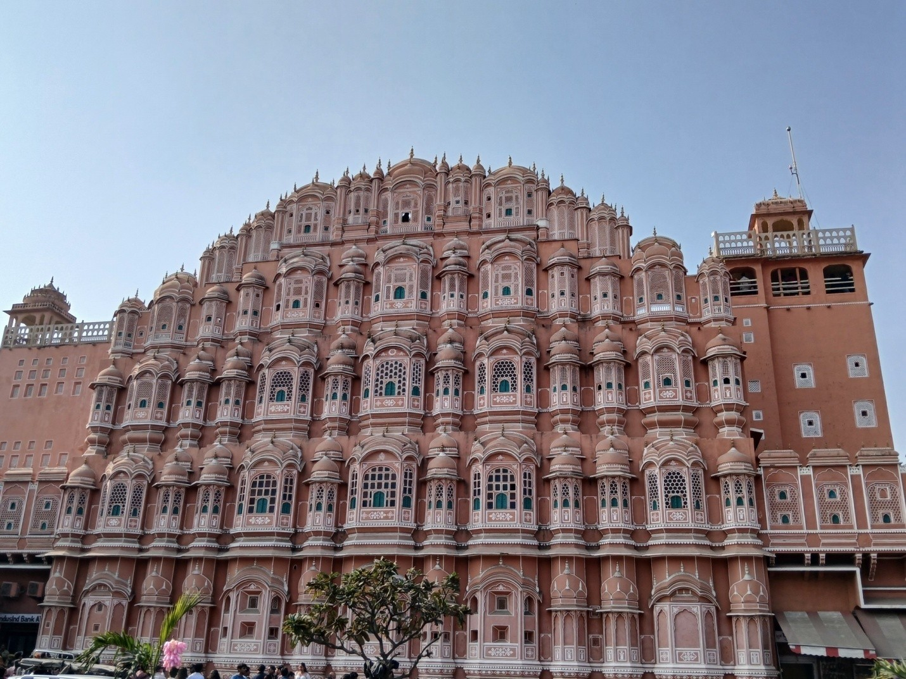
Johari Bazaar starts from this point. There are about 350 shops there, on both sides of the road. They sell garments, sarees, jewelry, leather items, ladies' bags, etc. While doing shopping, we tasted samosa, kachori, and lassi. Athu was getting irritated walking in that dusty environment. From there, we went to the Birla Temple. It is a beautiful marble temple.

After the Birla Temple visit, we returned back to the hotel.
After a heavy breakfast, we checked out from Leela Palace and proceeded to Agra. We left around 9 am. Our plan was to visit Fatehpur Sikri first and then visit the Taj Mahal. The distance is only around 250 km from Jaipur to Agra. Because of poor roads and traffic congestion, it was very much delayed.
To visit the Taj Mahal, visiting time closes by 4:30 pm. Only up to 4:30 pm will they allow entry to the premises. Shashi booked rooms in the Courtyard Marriott. This is also a 5-star hotel. We reached the hotel by 3:30 pm only. After checking in, we hurriedly changed our dress (Uma wanted everyone to wear white dress) and rushed to the Taj Mahal.
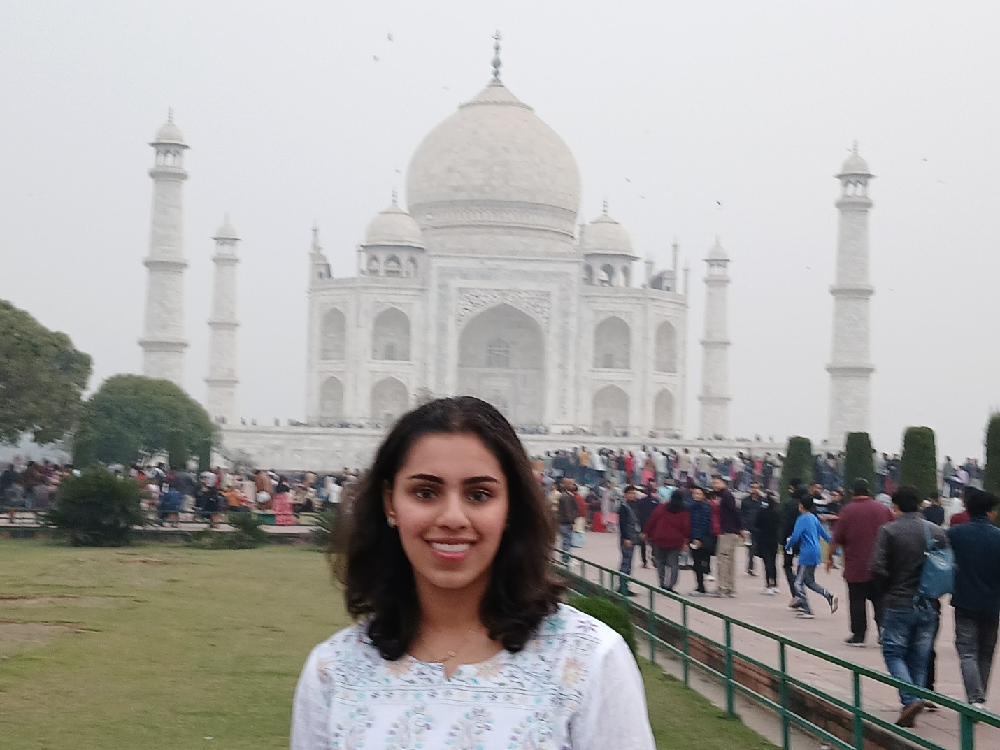
The tour guide arranged by Shashi was waiting at the hotel entrance. The tour guide even arranged entrance tickets for the Taj Mahal. Luckily, we could reach the entrance gate of the Taj Mahal before 4:30. Shashi arranged a photographer also.

I had been to the Taj when I was a kid with my parents. Then, about 30 years back, myself and Lakshmi visited with Uma and Jinu. It was a great pleasure to visit again with my grandchildren. By 6:30, visiting time ends, and they close the gate. We were the last group to get out of the gate. Then the guide took us to a good shop and we purchased a marble memento. Since the hotel was close by, we reached soon and took dinner there.
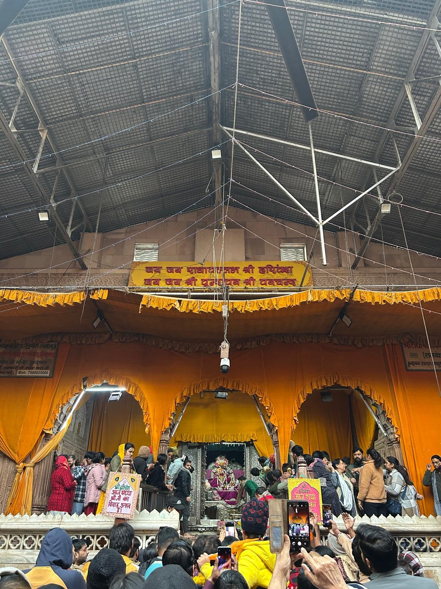
The last day of our tour. We all got up very early and assembled at the dining place by 6:30. By 7:30 am, we left the hotel and proceeded to Delhi. Delhi is 230 km away from Agra. Uma and Shashi wanted to visit at least one Krishna temple in Mathura, as it is on the way to Delhi. The driver suggested the Vrindavan Banki Bihari Temple.
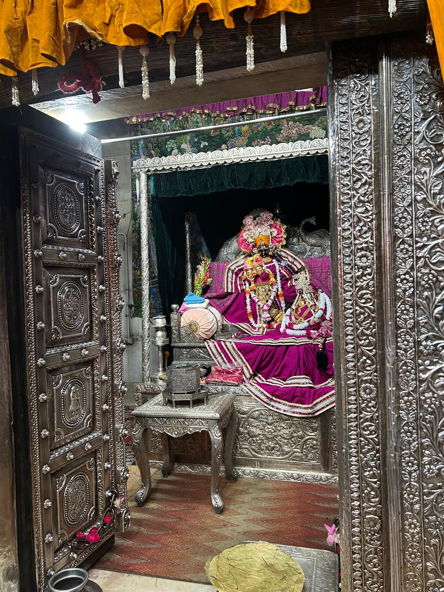
After reaching Vrindavan, he parked at a parking place and suggested going to the temple by rickshaw. We hired two rickshaws and thought we would be dropped at the entrance of the temple. He dropped us at a place after which vehicles can't go. From that point, we started walking through narrow streets. The streets were narrow and crowded. Somehow we reached the entrance of the temple, removed our footwear, left them under the custody of a shopkeeper, and went inside the temple.
The temple was crowded. All eleven of us entered together and, because of the crowd, we got separated. One group split into three groups. Tanvi and Athu were with Shashi. Shashi's elder brother Narendra, his son Ninad, myself, Uma, and Lakshmi were together. Anu, Sekar and their daughter were together. Fortunately, we had mobiles and were in touch. We entered through one gate of the temple and exited through another gate.
All three groups were moving around the temple but couldn't locate the shop where we left our footwear. At last, Shashi's group found the shop. He sent the location map and with that we all reached that spot, took an auto rickshaw again, and then boarded our van. Atharv took an assurance from Shashi and Uma that there would be no more temple visits until they leave India!
We wanted to return by 10 am and proceed to the airport, but we could only board the bus by 11 am. From Vrindavan, Delhi airport is about 180 km. To take the Pune flight, we should have reached the airport by at least 2 pm. We decided to skip lunch and proceed. However, I received a message from SpiceJet that the flight was late by 2 hours. So we stopped at a restaurant and had our lunch. We reached the airport around 3 pm.
Our Pune flight departed around 6 pm and reached Pune by 8 pm. From there, we took an Uber and reached home safely.